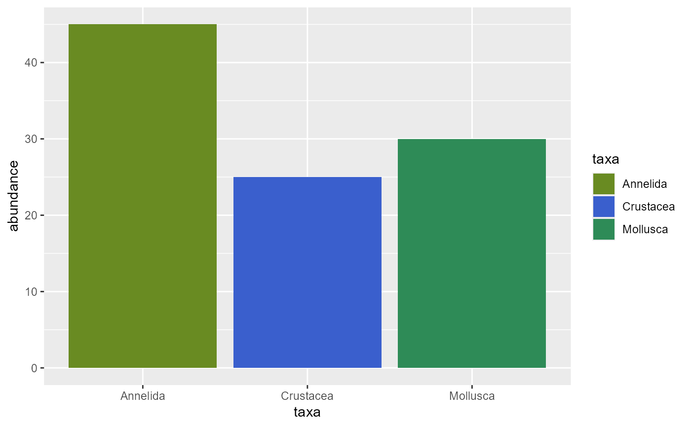

MCol.RdReturns a named vector with predefined colors for the main taxonomic groups of marine benthic communities.
MCol()A named vector where names are taxa and values are color codes in hexadecimal format or R color names.
This palette is designed to maintain visual consistency in graphs representing taxonomic composition of marine benthic communities. Colors were selected to maximize contrast between groups and facilitate visual interpretation.
# Get the complete palette
marine_colors <- MCol()
marine_colors
#> Porifera Calcarea Demospongiae Hexactinellida
#> "mediumpurple4" "mediumpurple3" "mediumpurple2" "mediumpurple1"
#> Homoscleromorpha Cnidaria Anthozoa Hydrozoa
#> "thistle2" "sienna4" "sienna3" "peru"
#> Scyphozoa Platyhelminthes Turbellaria Nemertea
#> "burlywood3" "goldenrod4" "goldenrod2" "tan4"
#> Anopla Enopla Phoronida Phoronis
#> "tan3" "tan1" "khaki4" "khaki3"
#> Phoronopsis Bryozoa Gymnolaemata Stenolaemata
#> "khaki1" "tan4" "tan3" "tan2"
#> Brachiopoda Rhynchonellata Linguliformea Craniiformea
#> "tan4" "tan3" "tan2" "tan1"
#> Annelida Polychaeta Mollusca Gastropoda
#> "olivedrab4" "olivedrab3" "seagreen4" "seagreen3"
#> Bivalvia Polyplacophora Scaphopoda Cephalopoda
#> "darkseagreen3" "darkseagreen2" "darkseagreen1" "honeydew3"
#> Arthropoda Crustacea Malacostraca Decapoda
#> "royalblue4" "royalblue3" "royalblue2" "royalblue1"
#> Amphipoda Isopoda Stomatopoda Thecostraca
#> "lightsteelblue3" "lightsteelblue2" "lightsteelblue1" "steelblue3"
#> Copepoda Ostracoda Branchiopoda Echinodermata
#> "steelblue2" "steelblue1" "lightblue" "darkorange3"
#> Asteroidea Ophiuroidea Echinoidea Holothuroidea
#> "darkorange2" "orange" "orange2" "orange1"
#> Crinoidea Chordata Chondrichthyes Osteichthyes
#> "moccasin" "indianred4" "indianred3" "indianred2"
#> Ascidiacea Cephalochordata Total
#> "mistyrose3" "mistyrose2" "firebrick4"
# Use in a plot
library(ggplot2)
data <- data.frame(
taxa = c("Annelida", "Mollusca", "Crustacea"),
abundance = c(45, 30, 25)
)
ggplot(data, aes(x = taxa, y = abundance, fill = taxa)) +
geom_bar(stat = "identity") +
scale_fill_manual(values = MCol())
